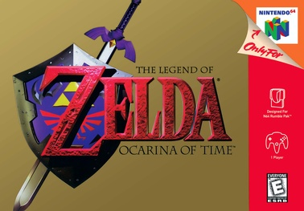
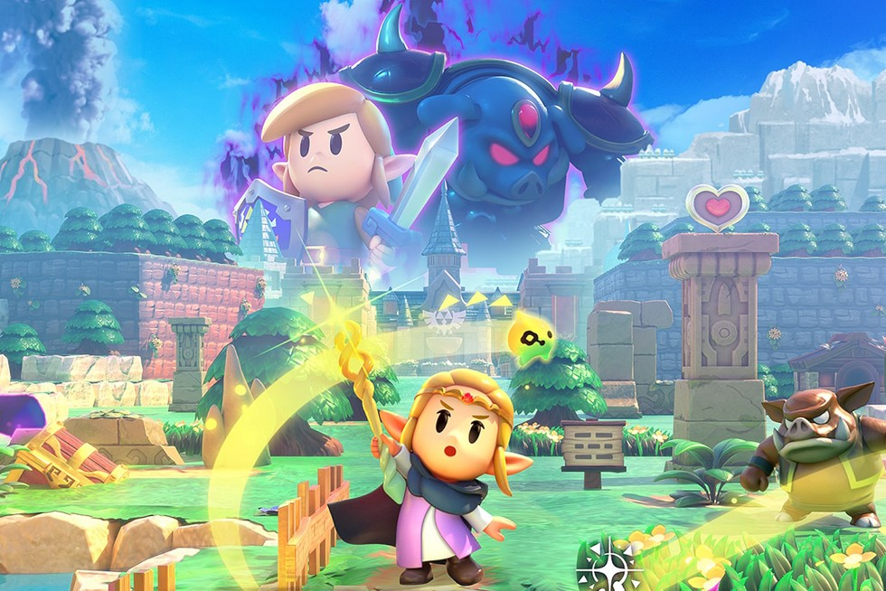

The Legend of Zelda (1986)

The Legend of Zelda introduced players to the vast world of Hyrule. Players control Link, who embarks on a quest to rescue Princess Zelda and defeat Ganon. The game is known for its open-world exploration and puzzle-solving elements. Its innovative gameplay laid the foundation for future titles in the series.
The Adventure of Link (1987)
.jpg)
The Adventure of Link takes a different approach with its side-scrolling gameplay. It combines traditional action with RPG elements, introducing leveling up and spells. Players explore the kingdom of Hyrule to revive Princess Zelda. This title expanded the lore and gameplay mechanics of the franchise.
The Legend of Zelda: Ocarina of Time (1998)

Ocarina of Time is often regarded as one of the greatest video games of all time. It introduced 3D graphics and a real-time combat system. Players journey through time to save Hyrule from Ganondorf. The game's music, story, and expansive world have left a lasting impact on gaming.
The Legend of Zelda: Breath of the Wild (2017)

Breath of the Wild redefined open-world gameplay in the Zelda series. Players are free to explore Hyrule from the beginning, encountering challenges at their own pace. The game emphasizes exploration, creativity, and player choice. Its stunning visuals and detailed world captivated audiences worldwide.
The Legend of Zelda: Tears of the Kingdom (2023)
.jpg)
Tears of the Kingdom builds upon the foundation set by Breath of the Wild, introducing new gameplay mechanics and narrative depth. Players once again assume the role of Link, venturing through an expansive world filled with floating islands and hidden secrets. The game introduces a robust crafting system, allowing players to create unique vehicles and devices. With its engaging story and innovative gameplay, it further enriches the Legend of Zelda universe.
The Legend of Zelda: Echoes of Wishes (2024)

Echoes of Wishes is a newly released title that transports players to an alternate version of Hyrule. With an all-new storyline, players navigate through a world filled with mystery and ancient relics. The game emphasizes character development and relationship-building, enriching the player's journey. Fans appreciate its blend of classic Zelda elements with modern gameplay innovations.